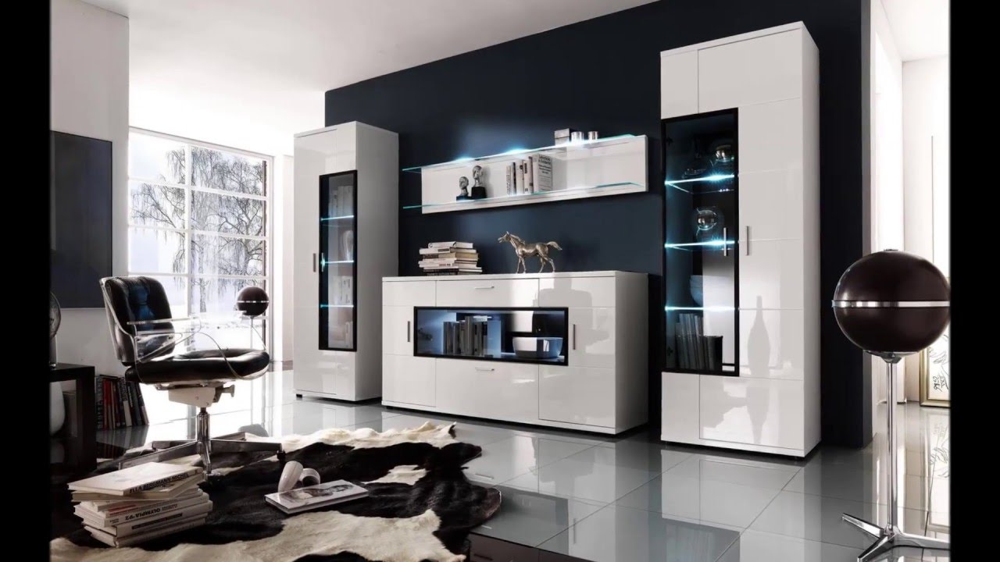
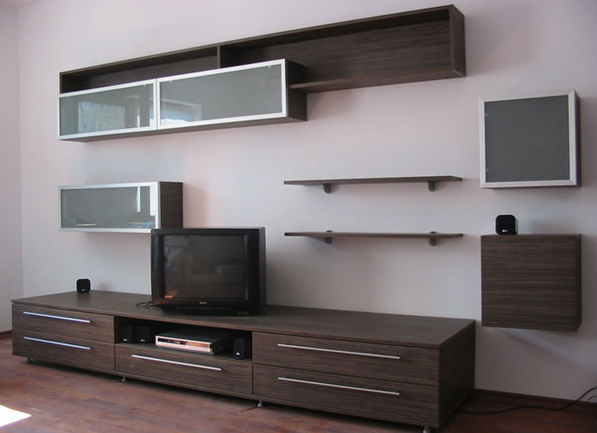

Descoperă mobilă pentru living și camera de zi | JYSK.ro
2020.09.21 00:38

Contactaţi-ne aici Broșură Magazine
Coş
Coşul este golCoş
Coşul este gol Dormitor Cadre de pat Canapele Extensibile Cearșafuri Comodă cu sertare Cuverturi Dulapuri Fețe de pernă Lenjerii de pat Noptiere Oglinzi Pat etaj/cu sertare Paturi continentale Paturi Pliante Perne Picioare și acces Plăpumi Saltele Saltele gonflabile Saltele superioare Somiere Tăblii Baie Accesorii baie Covorașe de baie Haine/încălțăminte Halate de baie Pentru haine Perdele de duș Prosoape Birou Birouri/Birouri Calc Diverse birou Scaune de birou Scaune gaming Sufragerie Canapele Canapele Extensibile Comode TV Fotolii Fotoliu tip puf Măsuțe de cafea/colț Îngrijire mobil/Acc Bucătărie Bufete/Dulapuri Bănci Mese dining Mese/scaune bar Măsuțe hol Scaune Dining Scaune plia/taburete Seturi dining Depozitare Bibliotecă/Etajeră Comodă cu sertare Coșuri, etc. Diverse Dulapuri Mobilier pentru hol Pantofar Rafturi Suporturi de umerașe Umerașe Perdele Acc Cusut Accesorii/unelte Galerii perdele Jaluzele plisate Perdele gata făcute Rolete Grădină Depozitare grădină Mese Mobilier terasă Perne de grădină Saci de Dormit Saltele gonflabile Seturi terasă Trambuline Umbrele de soare,etc Pentru casă Covoare Fețe de masă Iluminat Lavete Mobilier copii Obiecte decorative Oglinzi Pentru casă Pentru haine Perne Perne șezut Piele Preș Produse pentru copii Pături Acasă Sufragerie Canapele Canapele Extensibile Comode TV Fotolii Fotoliu tip puf Îngrijire mobil/Acc Măsuțe de cafea/colțDESCOPERĂ O GAMĂ VARIATĂ DE MOBILĂ PENTRU LIVING ȘI CAMERA DE ZI
Îți oferim o gamă variată de mobilier pentru living și camera de zi - canapele, canapele extensibile, măsuțe de cafea, fotolii, tabureți, pufuri şi comode TV - în diverse stiluri și materiale care păstrează amprenta rădăcinilor noastre scandinave. Fie că preferi un stil clasic, rustic sau unul modern, în sortimentul nostru vei găsi cu siguranță ceva în stilul care ți se potrivește. Mobilierul contemporan pentru living poate optimiza spațiul din casa ta, face o cameră mică să pară mai mare și aduce armonie în casa ta. Alege o canapea, o canapea extensibilă sau un fotoliu din material textil gri și o gamă întreagă de măsuțe de cafea sau mese de colț din lemn, din metal, cu efect de marmură sau aspect din beton.
Canapele
Canapele Extensibile
Comode TV
Fotolii
Fotoliu tip puf
Îngrijire mobil/Acc
Măsuțe de cafea/colț
Mobilier scandinav pentru living și camera de zi
Este important să ai o casă confortabilă, primitoare, în care să te simți întotdeauna relaxat și liniștit. Locuința fiecăruia dintre noi este locul unde ne putem exprima personalitatea. Probabil cea mai importantă piesă a camerei de zi - locul unde întreaga familie se adună seara - este canapeaua. Dacă ești în căutarea unei canapele noi, la JYSK, avem o selecție mare de seturi de canapele, canapele extensibile, canapele cu șezlong și canapele de colț în diferite materiale și culori, și nu facem compromisuri cand vine vorba de design și confort. Vei găsi, de asemenea, canapele mici și mari, în dimensiuni diferite, astfel încât să poți găsi cu ușurință una potrivită pentru camera de zi. Citește mai multe sfaturi pentru a alege o canapea potrivită .
Completează decorul cu un fotoliu confortabil , cu o măsuță de colț pe care să pui câteva decorațiuni și cu un taburet sau puf confortabil. Posibilitățile sunt nelimitate.
De asemenea, nu uita să cumperi accesorii pentru îngrijirea mobilierului . Dacă dorești să îți protejezi podeaua de zgârieturi, este posibil să montezi protecție din fetru sub picioarele pieselor de mobilier.
Inspiră-te din 5 modele de camere de zi sau mini-redecorarea camerei de zi cu un buget mic .
Ghiduri și articole blogINSTA EMOTIONS: Un decor amuzant și informal pentru living
Permite-i stilului tău de viață digital să se reflecte în decorul casei cu culori strălucitoare și detalii decorative distractive.
MY SPACE: Un decor dominat de armonie
Organizează-ți mai bine lucrurile și restabilește-ți nivelul de energie. Un living modern, cu soluții de depozitare și decor elegant.
Canapele extensibile pentru dormit, relaxare și depozitare
O canapea extensibilă cu depozitare încorporată este o soluție ideală pentru economisirea spațiului și te va ajuta să scapi de dezordinea din casa ta.
CULOAREA ANULUI 2020: CLASSIC BLUE ȘI CUM SĂ OBȚII ELEGANȚĂ PRIN SIMPLITATE
O culoare a cărei eleganță derivă din simplitate. Aceasta este Classic Blue, culoarea desemnată de Institutul pentru culori Pantone drept culoarea
MEET POSSIBILITIES. Cauți un job în retail? RĂDĂCINI SCANDINAVE Compania noastră s-a înființat în 1979 în Danemarca. GARANȚII SALTELE Ai 25 de ani garanție la saltelele GOLD și 15 ani garanție la gama PLUS. PREȚ AVANTAJOS Am selecționat o varietate largă de produse care au aceleași prețuri mici în fiecare zi.
Abonează-te la newsletterul JYSK!
Abonează-te la newsletterul JYSK și vei fi primul care află de ofertele noastre! Vei primi articole inspiraționale și informații exclusive despre concursurile noastre.
Categorii
Dormitor Baie Birou Sufragerie Bucătărie Depozitare Perdele Grădină Pentru casă Toate categoriileServiciul clienți
Contact Magazinele Broșură Termeni si conditii vânzări online Solutii finantare Garantia prețului Garanția Produselor Politica de confidentialitate Schimbă consimțământul privind cookie-urile Link-uri utileJYSK
Despre JYSK JYSK.com Presă Locuri de muncă Newsletter Blog GOJYSK.com Responsabilitate socialăSediu Central
JYSK România SRL
Bd. Mihail Kogălniceanu, Nr. 53, Clădirea Splay, Et. 5, 050104, Sector 5, București
serviciuclienti@jysk.com
Telefon: +40723 115 975
RO C.U.I. 18107744, Capital social subscris: 13.266.800 RON, integral vărsat, Nr. de înregistrare la Registrul Comerţului: J40/15662/20.12.2013/ Fiscal identification no. 18107744, Trade Registry no. J40/15662/20.12.2013
Facebook Instagram LinkedIn Pinterest Youtube
- Mobila Living - Alege Mobila de sufragerie - eMAG.ro
- Mobilă living și sufragerie | FAVI.ro
- Mobilă living - DEDEMAN - Dedicat planurilor tale
- Sufragerie | H&M RO
- Mobilier Sufragerie - Artmobel
- Mobila living | Mobila sufragerie - Vezi Oferta - Elvila.ro
- Canapele extensibile si fixe • living •2/3 locuri ᐈ Homelux
- Articole pentru Sufragerie| Miniprix
- Biblioteci Living » Modele Moderne pentru Sufragerie ...
- Sufragerie IKEA - IKEA
- Mobila Living - Alege Mobila de sufragerie - eMAG.ro
Mobilier / Mobila Sufragerie -mobila stil - mobila arta - cu un design fluid in linii curbe din lemn masiv de esenta tare de fag innobilat cu furnire estetice de nuc, paltin, trandafir, radacina de nuc si mahon combinat cu elemente sculptate manual, in finisaj nuc cu sculptura si intarsie.
- Mobilă living și sufragerie | FAVI.ro
Găsește mobilă cameră de zi și sufragerie pe placul tău, pentru livinguri mai mici sau mai mari.
- Mobilă living - DEDEMAN - Dedicat planurilor tale
Sufragerie; Bucătărie; Baie; Camera copiilor; Classic Collection; Cumpărături sortate după produs. Cumpărături sortate după produs; Vizualizaţi tot; Perne și fețe de pernă; Aşternuturi pat; Decoraţiuni; Îmbrăcăminte de casă; Accesorii pentru baie și duș; Soluții de depozitare și organizatoare; Pături; Perdele; Covoare ...
- Sufragerie | H&M RO
Descoperiti gama disponibila de mobila living si sufragerie. Alegeti o biblioteca standard sau puneti-va la incercare creativitatea cu mobila de living modulara, disponibila intr-o gama variata de culori.Incepeti cautarea cu alegerile populare sau verificati gama de usi de interior.
- Mobilier Sufragerie - Artmobel
SUFRAGERÍE, sufragerii, s. f. 1. Cameră în care se servește masa și care este mobilată cu mobilele necesare pentru aceasta. Cînd intrarăm în sufragerie, însetați, plini de foame și de frig, ne izbi deodată lumina vie a lumînărilor.
- Mobila living | Mobila sufragerie - Vezi Oferta - Elvila.ro
Principalele piese de mobilă de sufragerie care nu trebuie să îți lipsească sunt: o canapea încăpătoare, din materiale de calitate, rezistentă în timp și ușor de întreținut, un mic fotoliu în cazul în care îți face plăcere să citești, o masă de cafea și o mică bibliotecă sau un dulap.
- Canapele extensibile si fixe • living •2/3 locuri ᐈ Homelux
Mobilier living, sufragerie Living comanda simulator 3D in magazine Biblioteci pentru sufragerie Cuiere si mic mobilier Clasic & country Camere de zi & sufragerii Vitrine, argintare si dulapuri Mese, masute si comode TV Bufet, veselar Mobila de dormitor Mobilier de dormitor Dormitoare set Paturi Dulapuri Dressing pe comanda simulator 3D in ...
- Articole pentru Sufragerie| Miniprix
Este momentul să iei masa? Avem multe tipuri de mobilier pentru sufragerie din care poți alege. Vină să vezi seturi de masă, scaune și multe posibilități de combinare a acestora, indiferent de spațiul de care dispui.
- Biblioteci Living » Modele Moderne pentru Sufragerie ...
Deși inițial, biblioteca era o piesă de mobilier concepută doar pentru cărți, noile designuri sunt adaptate la modul de viață al omului contemporan. Pe lângă rafturile deschise pentru etalarea cărților sau altor obiecte decorative, ea oferă și spații închise (tip vitrină sau dulap), sertare încăpătoare, dar și un spațiu liber, proiectat special pentru televizor.
- Sufragerie IKEA - IKEA
DESCOPERĂ O GAMĂ VARIATĂ DE MOBILĂ PENTRU LIVING ȘI CAMERA DE ZI Îți oferim o gamă variată de mobilier pentru living și camera de zi - canapele, canapele extensibile, măsuțe de cafea, fotolii, tabureți, pufuri şi comode TV - în diverse stiluri și materiale care păstrează amprenta rădăcinilor noastre scandinave Fie că preferi un stil clasic, rustic sau unul modern, în ...
Mobilier / Mobila Sufragerie -mobila stil - mobila arta - cu un design fluid in linii curbe din lemn masiv de esenta tare de fag innobilat cu furnire estetice de nuc, paltin, trandafir, radacina de nuc si mahon combinat cu elemente sculptate manual, in finisaj nuc cu sculptura si intarsie.
Găsește mobilă cameră de zi și sufragerie pe placul tău, pentru livinguri mai mici sau mai mari.
Sufragerie; Bucătărie; Baie; Camera copiilor; Classic Collection; Cumpărături sortate după produs. Cumpărături sortate după produs; Vizualizaţi tot; Perne și fețe de pernă; Aşternuturi pat; Decoraţiuni; Îmbrăcăminte de casă; Accesorii pentru baie și duș; Soluții de depozitare și organizatoare; Pături; Perdele; Covoare ...
Descoperiti gama disponibila de mobila living si sufragerie. Alegeti o biblioteca standard sau puneti-va la incercare creativitatea cu mobila de living modulara, disponibila intr-o gama variata de culori.Incepeti cautarea cu alegerile populare sau verificati gama de usi de interior.
SUFRAGERÍE, sufragerii, s. f. 1. Cameră în care se servește masa și care este mobilată cu mobilele necesare pentru aceasta. Cînd intrarăm în sufragerie, însetați, plini de foame și de frig, ne izbi deodată lumina vie a lumînărilor.
Principalele piese de mobilă de sufragerie care nu trebuie să îți lipsească sunt: o canapea încăpătoare, din materiale de calitate, rezistentă în timp și ușor de întreținut, un mic fotoliu în cazul în care îți face plăcere să citești, o masă de cafea și o mică bibliotecă sau un dulap.
Mobilier living, sufragerie Living comanda simulator 3D in magazine Biblioteci pentru sufragerie Cuiere si mic mobilier Clasic & country Camere de zi & sufragerii Vitrine, argintare si dulapuri Mese, masute si comode TV Bufet, veselar Mobila de dormitor Mobilier de dormitor Dormitoare set Paturi Dulapuri Dressing pe comanda simulator 3D in ...
Este momentul să iei masa? Avem multe tipuri de mobilier pentru sufragerie din care poți alege. Vină să vezi seturi de masă, scaune și multe posibilități de combinare a acestora, indiferent de spațiul de care dispui.
Deși inițial, biblioteca era o piesă de mobilier concepută doar pentru cărți, noile designuri sunt adaptate la modul de viață al omului contemporan. Pe lângă rafturile deschise pentru etalarea cărților sau altor obiecte decorative, ea oferă și spații închise (tip vitrină sau dulap), sertare încăpătoare, dar și un spațiu liber, proiectat special pentru televizor.
DESCOPERĂ O GAMĂ VARIATĂ DE MOBILĂ PENTRU LIVING ȘI CAMERA DE ZI Îți oferim o gamă variată de mobilier pentru living și camera de zi - canapele, canapele extensibile, măsuțe de cafea, fotolii, tabureți, pufuri şi comode TV - în diverse stiluri și materiale care păstrează amprenta rădăcinilor noastre scandinave Fie că preferi un stil clasic, rustic sau unul modern, în ...

